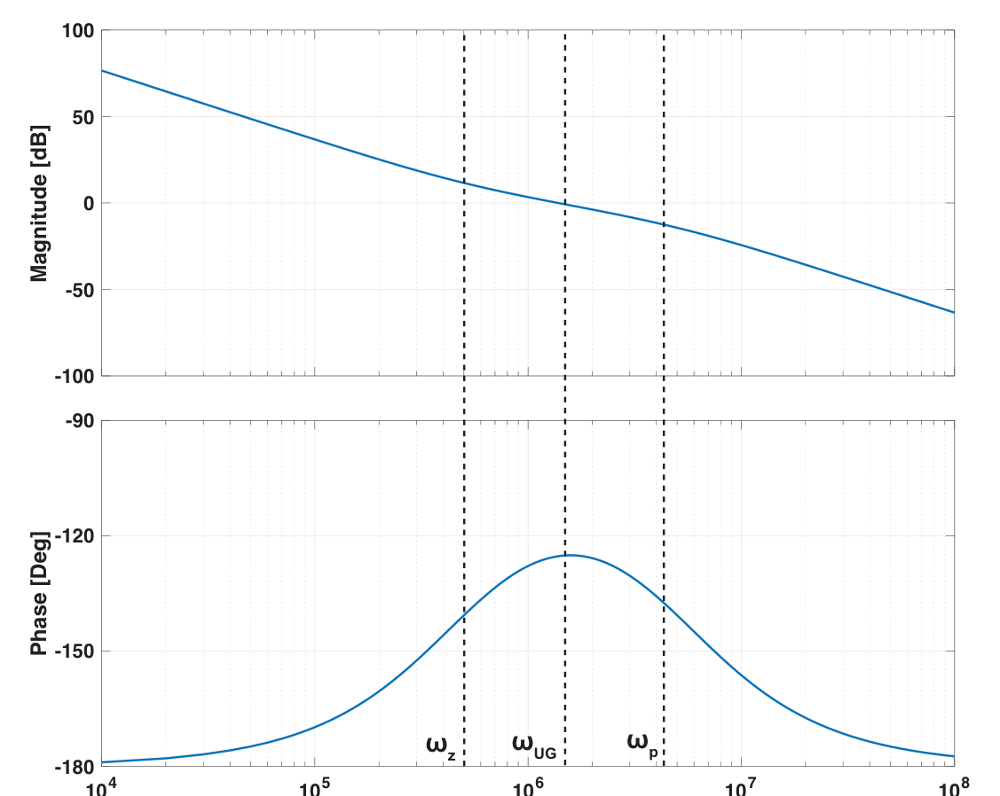
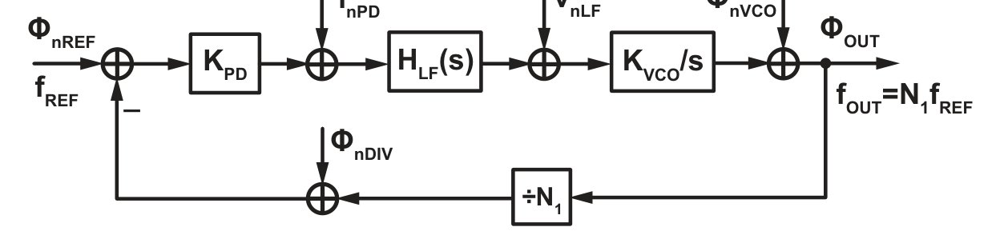
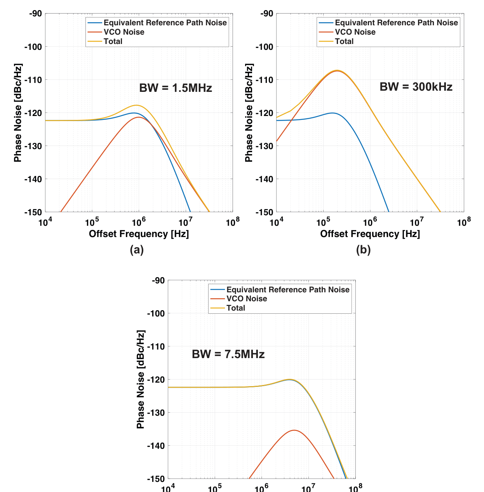
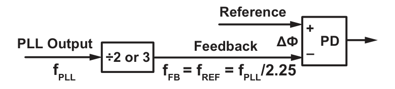
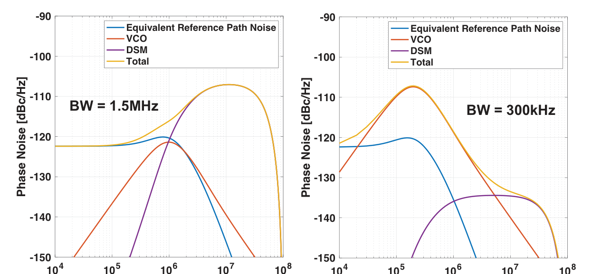
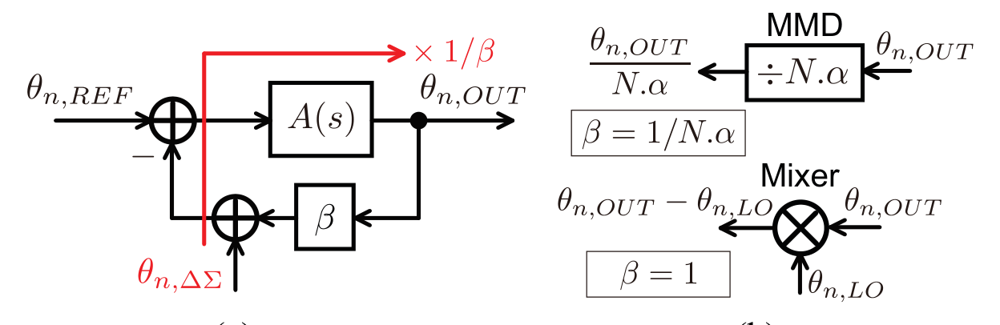
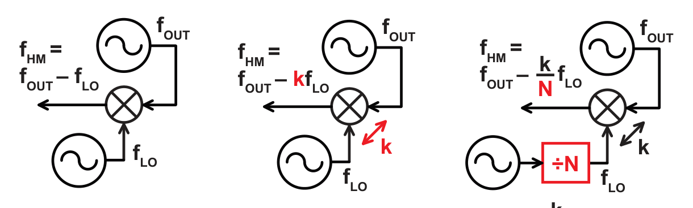
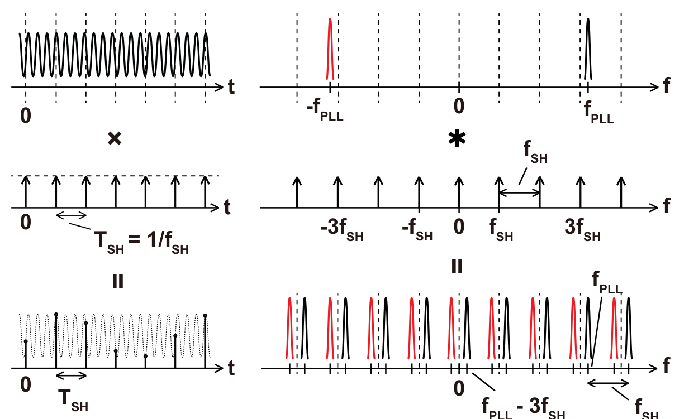
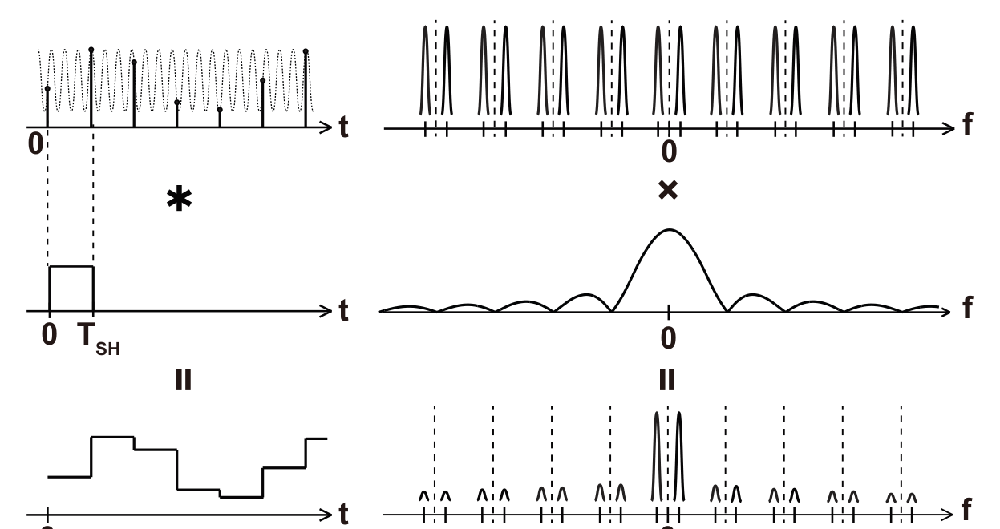

長田論文を読む前の基礎知識まとめ
「詳細まとめ」がまだ難しく感じるとき用の、言葉と直感をそろえる入門ノート。数式は最小限、比喩多め。ここを一周してから詳細まとめに戻ると、だいぶ読めるようになるはず。
図は論文本文（長田将さんの博士論文）から切り出したもの。個人の学習用。
0. この論文が言っていることを超ざっくり
PLL は「正確だけど遅い時計（水晶）」から「速い時計（GHz）」を作る装置。速くするために「割り算（分周器 ÷N）」を使うのが普通のやり方。
ところがこの「割り算」が、ちょっとしたノイズを N 倍に拡大してしまう。とくに「小数倍の時計」を作ろうとすると、割り切れないハンパ（量子化ノイズ）が N 倍されて出てきて、時計がガタガタになる。
長田さんの提案：「割り算」をやめて「引き算」にする。周波数を引き算する箱＝ミキサ（正確には高調波ミキサ HM）を使う。引き算ならノイズは拡大されない。しかも 調整（キャリブレーション）がいらない。
論文は「その引き算方式をどう回路にするか（3章＝Dual-Feedback）」＋「引き算方式ならではの副作用の潰し方（4・5・6章）」でできている。
これだけ覚えて次へ
敵 ＝ 小数倍PLLの量子化ノイズ／スパー。原因 ＝ 分周器（割り算）がノイズを N 倍する。武器 ＝ ミキサ（引き算）でノイズを N 倍しない。あとは副作用対策。
1. PLL（位相同期回路）って何をする箱？
やりたいこと
手元にある基準の信号（水晶発振器、例えば 100 MHz。正確だが遅い）から、目的の周波数（例えば 2.4 GHz）の信号を作る。作った信号は基準とピッタリ同期していてほしい。
比喩：合唱の指揮者
基準信号＝指揮者のタクト（正確なテンポ）。VCO＝歌い手（自分で声は出せるが、放っておくとテンポがずれる）。PLL＝「歌い手が指揮を見てテンポを合わせ続ける仕組み」。ずれたら自動で直すフィードバックになっているのがミソ。
速くする仕組み ＝ 分周器（÷N）
- VCO（電圧制御発振器）は制御電圧で周波数が変わる発振器。まずこれを自由に 2.4 GHz くらいで発振させる。
- その 2.4 GHz を ÷24 の分周器に通すと 100 MHz になる。これを基準（100 MHz）と位相比較する。
- ずれていたら制御電圧を調整して VCO を動かす。ロックすると「VCO出力 ÷24 ＝ 基準」＝ VCO出力 ＝ 24 × 基準 ＝ 2.4 GHz が保たれる。
つまり出力周波数は $f_\text{OUT}=N\times f_\text{REF}$。N を変えれば出力周波数を変えられる（＝周波数シンセサイザ）。
「ループ」の中身（1周）
基準 → PD（位相検出器）で「VCOの帰還信号」と比べて差を出す → LF（ループフィルタ）でならす → VCOの制御電圧に → VCO出力 → ÷Nで帰還信号に → PDに戻る。これが延々回って「差がゼロ」に落ち着く。
2. なぜ「周波数」同期じゃなく「位相」同期と呼ぶ？
- 位相＝波が1周期の中で「今どこにいるか」（0〜360°）。周波数＝位相が進む速さ。
- 「2つの信号の周波数がぴったり同じ」＝「2つの位相の差が時間的に一定」。逆に位相差が広がっていく＝周波数がずれている。
- だから PLL は実際には「位相差を一定（＝ゼロ付近）に保つ」制御をしている。周波数一致はその結果。
比喩：トラックを走る2人
2人のランナーの「間隔（位相差）」がずっと一定なら、2人の「速さ（周波数）」は同じ。間隔がじわじわ開くなら速さが違う。PLLは「間隔を一定に保て」と指示するコーチ。
解析では信号 $V(t)=A\sin(\omega t+\phi(t))$ と書き、この $\phi(t)$（理想からのズレ＝過剰位相）だけを追う。ノイズも「位相のゆらぎ」として $\phi_n$ で表す。
3. 位相雑音（PN）とジッタ ― 何が違う？なぜジッタで測る？
同じ「時計のガタつき」を2つの見方で表しているだけ
| 位相雑音 PN | ジッタ | |
|---|---|---|
| 見る軸 | 周波数軸（スペクトル） | 時間軸 |
| 中身 | 搬送波からどれだけ離れた所に、どれだけノイズがあるか | 波のエッジ（ゼロ交差）が理想からどれだけズレるか、その標準偏差 |
| 単位 | dBc/Hz（後述） | 秒（fs〜ps） |
| グラフ | 横軸=オフセット周波数[Hz]、縦軸=[dBc/Hz] の右下がりの曲線 | 1個の数字（例：175 fs） |
PN スペクトルを一定範囲で積分すると、位相ゆらぎの分散が出て、それを時間に直すと積分ジッタになる。つまり ジッタ ＝ PN曲線の「面積」を時間に換算したもの。
超重要：÷N すると PN は下がるがジッタは変わらない
信号を ÷N すると、PN のグラフは下に $20\log N$ [dB] ぶん下がる（パワーで $1/N^2$）。「お、ノイズ減った！」と思うが、周期も N 倍に伸びている。位相は「1周期＝360°」で数える相対的な量なので、「PNが $1/N$」と「周期が N 倍」がちょうど打ち消し合って、時間軸のガタつき＝ジッタは1ミリも変わらない。
だから「PN が良くなった」だけでは意味がない。この論文はいつも ジッタ（と、それと電力の積＝FoM）で比べる。$\sigma \approx \dfrac{\sqrt{\text{積分PN}}}{f_\text{OUT}}$。
比喩
ゴム紐に描いた目盛りのブレ幅（＝PN）を測って「ブレが半分になった！」と喜んでも、ゴム紐を2倍に伸ばした（＝周期2倍）だけなら、実際の目盛りの物理的なズレ（＝ジッタ）は同じ。
4. dB / dBc / dBc/Hz の読み方
- dB：比を対数で表す。パワー比なら $10\log_{10}(\text{比})$、振幅比なら $20\log_{10}(\text{比})$。10倍＝10 dB（パワー）、2倍＝約6 dB（振幅）、$\times$24 ＝ $20\log 24 \approx 27.6$ dB。
- dBc：「搬送波（carrier）に対して何 dB か」。$-65$ dBc のスパー ＝ 本体より $10^{6.5}\approx$ 300万分の1 のパワーの余計なピー音。小さい（負に大きい）ほど良い。
- dBc/Hz：位相雑音の単位。「ある離調周波数で、帯域幅 1 Hz あたり、搬送波の何 dB 下にノイズがあるか」。$-120$ dBc/Hz @ 1 MHz ＝「搬送波から 1 MHz 離れた所のノイズ密度は搬送波の $10^{-12}$ /Hz」。
読みグセ
「$-33$ dBc が $-66$ dBc に改善」＝ 33 dB 良くなった ＝ パワーで約2000分の1、振幅で約45分の1。3章で「分周比−1（≈45）倍」の改善が「33 dB」と対応するのはこれ（$20\log 45\approx33$）。
5. 伝達関数・ボード線図・極と零点（最低限）
伝達関数 ＝ 「周波数ごとの通過率の一覧表」
ある入力（例：VCOのノイズ）が、出力にどれだけの大きさ・位相で現れるかを、周波数の関数 $H(s)$（$s=j\omega$）で表したもの。$|H|$ が大きい周波数はよく通り、小さい周波数は通らない。
ボード線図＝ $|H|$（dB）と位相（度）を、横軸「周波数（対数）」で描いたグラフ。
フィルタの3タイプ（この論文でずっと出てくる）
| 型 | 通すもの | PLLでの担当 |
|---|---|---|
| LPF（低域通過） | 低い周波数だけ通す | 基準系のノイズ（水晶・PD・分周器・量子化ノイズ）はこれで出力に出る |
| HPF（高域通過） | 高い周波数だけ通す | VCO のノイズはこれで出力に出る |
| BPF（帯域通過） | 真ん中の周波数だけ通す | ループフィルタ自身のノイズ |
LPF と HPF の境目の周波数が同じ（＝ループ帯域 $\omega_\text{UG}$）。だから「境目をどこに置くか」で基準系ノイズと VCO ノイズの取り分が決まる（→ 7節）。
極（pole）と零点（zero）、なぜ安定性の話になるか
- 極：そこを境に $|H|$ が急に落ち始める周波数。1個で $-20$ dB/dec 傾く＆位相が $-90°$ 回る。
- 零点：逆。$|H|$ の落ちを止め、位相を $+90°$ 戻す。
- PLL は VCO（積分器＝極1個）＋ ループフィルタ（もう1個 DC に極）で DC に極が2個。放っておくと位相が $-180°$ 回り、フィードバックが「打ち消し」でなく「増幅」になって発振（不安定）。
- そこで 零点を1個入れて位相を戻す。ループのゲインが 1 になる周波数（$\omega_\text{UG}$）で位相に余裕（位相マージン）を持たせる。

比喩：シャワーの温度調整
熱いと感じてから蛇口をひねり、効くまで時間がかかる（＝位相の遅れ）。遅れが大きすぎると「熱い→全開で冷たく→冷たい→全開で熱く」と発振する。零点＝「配管を短くして反応を早める」工夫。
6. PLL の登場人物と、それぞれが出すノイズ

| ブロック | 役割 | 出すノイズ（記号） | クセ |
|---|---|---|---|
| 基準発振器（水晶など） | 正確なテンポの元 | $\phi_\text{nREF}$ | ほぼ平坦（白色）。低域でフリッカ。電力を上げても下がらない（デバイス固有） |
| PD / PFD / CP（位相検出器＋チャージポンプ） | 基準と帰還の位相差を電流/電圧に変換 | $i_\text{nPD}$ | ほぼ白色。SPD なら $kT/C$ ノイズ、DPLL なら TDC 量子化ノイズ |
| LF（ループフィルタ） | 差の信号をならして制御電圧に | $v_\text{nLF}$ | 設計で十分小さくでき、たいてい無視 |
| VCO（電圧制御発振器） | 実際に高周波を出す。LC型かリング型 | $\phi_\text{nVCO}$ | $1/f^2$（右下がりが急）。設計を左右する最重要ノイズ源 |
| 分周器（÷N / MMD） | 高周波を基準の周波数まで割り下げて帰還 | $\phi_\text{nDIV}$ | 整数分周なら熱雑音だけ。小数分周だと量子化ノイズが乗る（後述） |
基準・PD・分周器のノイズは「ループの入口側」に集約でき、まとめて等価基準換算ノイズ $\phi_\text{nEQUIV}$（白色）と呼ぶ。結局ノイズ源は「入口側の白色ノイズ」と「VCOの $1/f^2$ ノイズ」の2つに単純化される。
7. PLL設計の一番基本のトレードオフ（帯域の置き方）
- 入口側の白色ノイズ（$\phi_\text{nEQUIV}$）は LPF で出力に出る（低域だけ通る）。
- VCO のノイズ（$\phi_\text{nVCO}$）は HPF で出力に出る（高域だけ通る）。
- 両者の境目は同じ ＝ ループ帯域 $\omega_\text{UG}$。
だから：
- 帯域を狭くする → 入口側ノイズはよく消える、が VCO ノイズが低域まで残って悪化。
- 帯域を広くする → VCO ノイズはよく消える、が入口側ノイズが高域まで通って悪化。
- → ちょうど良い帯域で合計ジッタが最小になる。

なぜこれが論文の出発点になるか
小数分周にすると、この「入口側ノイズ」にDSM量子化ノイズが大量に加わる。しかもそれを消すには帯域をうんと狭くするしかなく、するとVCOノイズが悪化 → integer-N より明確にジッタが悪くなる。この「小数倍の代償」をどう小さくするかが論文全体のテーマ。
8. Fractional-N と量子化ノイズ ― 小数倍がなぜ難しい
分周器は整数しか割れない
$f_\text{OUT}=N\times f_\text{REF}$ で N が整数なら、出力周波数は基準の飛び飛びの倍数しか作れない。細かい周波数刻みが欲しい用途では困る。
解決：分周比を毎回変えて「平均で小数」にする

- ÷2.25 なら「2, 3, 2, 2」を繰り返せば平均 2.25。PLL は平均で合わせるので、実効的に ÷2.25 になる。
- でも毎回の分周比は 2 か 3 のハンパ。この「割り切れなさ」が帰還信号に乗るノイズ＝量子化ノイズ。
量子化ノイズを目立たなくする ＝ ΔΣ変調（DSM）
- 単純に「2,3,2,2」と周期的に繰り返すと、その繰り返しが鋭いピー音（スパー）になる → 使い物にならない。
- ランダムっぽく切り替える＋ノイズシェーピング：ハンパのノイズを高い周波数に押し上げる。PLL の LPF は高域を捨てるので、押し上げた分だけ消える。
- これをやる回路が DSM（デルタシグマ変調器）。MASH 1-1-1 は 1次DSMを3段重ねて「3次のノイズシェーピング」（低域を強く抑え、その分高域に山ができる）を作る定番。

比喩：おつりの1円玉
毎回の買い物で「きっちり払えない端数」が出る。1回1回はバラバラ（＝量子化ノイズ）。DSM＝「端数をなるべく細かい単位に散らして、家計簿の合計では見えなくする」テクニック。ノイズシェーピング＝「端数を、後で簡単に切り捨てられる桁に寄せる」。
さらに悪いこと：分周器がノイズを N 倍する
PLL はフィードバック系。入口側のノイズは「フィードバックの強さ $\beta$ の逆数」倍されて出力に出る。分周器を使うと $\beta=1/N$ なので、入口側ノイズ（量子化ノイズ含む）が N 倍。100 MHz→2.4 GHz なら $\times$24 ＝ 27.6 dB。これが「小数倍の代償」が大きい根本原因。長田論文はここを「割り算をやめて引き算にする」で潰す。

9. スパー（spur）って何
- スパー ＝ 位相雑音スペクトルの中の鋭い一本のピー音（連続的なノイズの丘ではなく、線）。
- 原因は「何かの周期的な繰り返し」。周期的な変動は、周波数軸では必ずトーン（線）になる。
- フラクショナルスパー：DSM の出力が完全にはランダムでなく周期性が残る＋回路の非線形（CPの電流ミスマッチ等）でノイズが折り返される → $\alpha f_\text{REF}$（$\alpha$＝分周比の小数部）とその倍数に出る。$\alpha$ が小さいと搬送波のすぐ近くに出て、フィルタで消せない。
- 基準スパー：基準周波数（例 100 MHz）に出るスパー。PD が周期的に動くことなどが原因。
- オフセットスパー（4章）：HM（S/H）を使うと出る、この方式特有のスパー。詳細まとめ4章のテーマ。
スパーとノイズの違い（対策が違う）
連続的なノイズは「帯域を調整」「電力を足す」で下げられる。スパーは線なので、そのやり方が効きにくい。とくに搬送波近くのスパーは、帯域を狭めても搬送波ごと削ってしまうので消せない。だから「そもそも出さない設計」が要る。
10. ミキサとサンプリング（HM を理解する前提）
ミキサ ＝ 周波数の足し算・引き算をする箱
- 2つの信号（周波数 $f_1$, $f_2$）を掛け算すると、出力に $f_1+f_2$ と $f_1-f_2$ の成分ができる。片方をフィルタで取れば「周波数の引き算」ができる。
- PLL の帰還で「÷N（割り算）」の代わりに「$f_\text{OUT}-f_\text{LO}$（引き算）」を使えば、$\beta=1$ でノイズを増やさない。これが論文の核。
単純ミキサの問題 → 高調波ミキサ（HM）
- 単純ミキサだと $f_\text{LO}$ を $f_\text{OUT}$ のすぐ近くに置くことになり、2つの発振器が引き込み合ってノイズ悪化（frequency pulling）。
- 高調波ミキサ HM：$f_\text{HM}=f_\text{OUT}-k\,f_\text{LO}$（$k$＝整数。LO の $k$ 倍を引く）。$f_\text{LO}$ を $f_\text{OUT}$ からずっと下に置けるので引き込みが減る。
- それでも $f_\text{OUT}\approx k f_\text{LO}$ で高調波による引き込みが残る → LO の前に「$k$ と互いに素な分周比」の分周器を足してさらに回避。

HM をどう作るか ＝ サンプル&ホールド（S/H）
S/H ＝「一定間隔 $T_\text{SH}$ ごとに入力の値をパチッと取り（サンプル）、次に取るまでその値を保つ（ホールド）」。これが実は HM として働く。


- サンプリングで $f_\text{OUT}-k f_\text{SH}$ などの成分ができ、ホールドの sinc で余計な高周波成分が減衰 → 望みの $f_\text{HM}=f_\text{OUT}-k f_\text{SH}$ が残る（＝HM 完成）。
- ただし sinc は余計な成分を完全には消せない。この「取りこぼし」が4章の「オフセットスパー」。だから S/H の前後にちゃんとしたフィルタ（LPF）を置く必要がある。
比喩：ストロボ写真
回っているプロペラを一定間隔でストロボ撮影すると、実際よりゆっくり回って見えたり止まって見えたりする（＝速い周波数が遅い周波数に化ける＝ダウンコンバート）。S/H はこれを意図的にやって高周波を低周波に落としている。「化けた見かけの周波数」が $f_\text{HM}$。
11. FoM（性能指数）の読み方
$$\text{FoM}_\text{jitter}=10\log_{10}\!\left[\left(\frac{\sigma}{1\,\text{s}}\right)^2\left(\frac{P}{1\,\text{mW}}\right)\right]\ [\text{dB}]$$
- 「ジッタ² × 電力」を対数にしたもの。小さい（負に大きい）ほど良い。$-248$ dB は $-229$ dB よりずっと良い。
- なぜ「ジッタ²×電力」か：多くの回路で「電力を2倍にするとノイズパワーが半分」＝ ジッタ² ∝ 1/電力。だから ジッタ²×電力 ≒ 一定 が「その回路方式の効率」を表す。
- 「FoM が同じでもジッタ要求を満たせないと失格」なので、論文では1点のFoMでなくジッタ-電力の曲線（パレート）で方式を比較する（詳細まとめ3.5節）。
| 試作 | ジッタ | FoM | ひとこと |
|---|---|---|---|
| 3章（LC-VCO, 3.5GHz） | 503 fs | — | 量子化ノイズ増幅回避の実証、フラクショナルスパー −65 dBc |
| 5章（リングVCO, 3GHz） | 869 fs | −229.4 dB | キャリブレーション不要のリングVCO小数PLLで最良クラス |
| 6章（7GHz） | 106 fs | −248.5 dB | SOTA級。基準スパー −77 dBc |
12. 各章がどの悩みを解いているか（1枚マップ）
| 章 | 悩み | 打ち手 |
|---|---|---|
| 2 | （土台）小数倍にすると量子化ノイズで integer-N よりジッタが悪い | 先行手法3系統を整理（ノイズキャンセル／シェーピング周波数↑／等価FIR） |
| 3 ★ | 分周器（÷N）が量子化ノイズを N 倍する | HM（引き算）で帰還 → $\beta=1$、増幅なし。回路として Dual-Feedback（補助PLL1個）を提案。キャリブレーション不要 |
| 4 | HM（S/H）が「オフセットスパー」を出す | Type-A / Type-B の発生機構・位置・大きさを式で予測 → S/H 前後の LPF 設計指針 |
| 5 | Dual-Feedback は「ノイズシェーピング周波数」が頭打ち。リングVCOだと量子化ノイズが残る | 分割帰還分周＋Nested-PLL フィルタ（PDLPF）を Dual-Feedback の中に入れる。シェーピング周波数を $N_2$ 倍に |
| 6 | HM用LOを作る「余分なVCO」のノイズが乗る | 高速遅延線を使わない電圧領域フィードフォワード雑音キャンセルで外部VCOのノイズを打ち消す |
| 7 | — | 展望：mm-wave、N-path S/H、マルチチャネル共有、DTC併用 |
次のステップ
ここまで入ったら 詳細まとめ.html の「この論文を1枚で」→「記号早見表」→ 第2章 の順で戻るとスッと読めるはず。各章末の確認問題を先に見て、答えられない所だけ本文に戻る、という使い方も効率的。
✅ 基礎の確認問題
B-1. PLL は何から何を作る装置か。速くするのに何を使うか。
正確だが遅い基準信号（水晶、数十〜数百MHz）から、目的の高い周波数（GHz級）の、基準に同期した信号を作る。速くするのにフィードバックループの中に分周器（÷N）を入れ、$f_\text{OUT}=N f_\text{REF}$ とする。
B-2. 「周波数が合う」を位相の言葉で言い換えると？
2つの信号の位相差が時間的に一定であること。PLL は位相差を一定（ゼロ付近）に保つ制御をしていて、周波数一致はその結果。だから「位相」同期回路と呼ぶ。
B-3. 信号を ÷N したとき、PN とジッタはそれぞれどうなるか。なぜジッタで評価するのか。
PN は $20\log N$ [dB] 下がる（パワーで $1/N^2$）が、周期が N 倍になるのでジッタは不変。位相は「1周期＝360°」で数える相対量なので両者が相殺する。PN の絶対値は動作周波数を変えるだけで動いてしまうので、時間軸の実ズレ＝ジッタ（と電力との積＝FoM）で比べる。
B-4. $-40$ dBc のスパーが $-70$ dBc に改善した。何倍良くなったか（振幅で）。
30 dB 改善 ＝ 振幅で $10^{30/20}\approx31.6$ 倍小さくなった（パワーで1000分の1）。詳細まとめ5章の「$20\log(4\times8.0018)\approx30$」＝分周比の積 32 倍の増幅回避、と対応する。
B-5. LPF・HPF の境目の周波数が同じだと、なぜトレードオフになるのか。
入口側の白色ノイズは LPF で、VCO ノイズは HPF で出力に出る。境目（ループ帯域 $\omega_\text{UG}$）を下げると入口側は減るが VCO が低域まで残り悪化、上げると逆。両方を同時に最小にはできず、合計ジッタが最小になる中間の帯域を選ぶことになる。
B-6. DSM（ΔΣ変調器）は量子化ノイズを「消す」のか？何をしているのか。
消してはいない。総量は保ったまま、ノイズを高い周波数へ押し上げる（ノイズシェーピング）。PLL の LPF が高域を捨てるので、押し上げた分だけ出力では見えなくなる。MASH 1-1-1 は 1次DSM 3段で3次のシェーピングを作る。加えて周期性を崩してスパーを避ける役目もある。
B-7. 「分周器の代わりにミキサ」で何が良くなるのか。単純ミキサの問題と対策は？
フィードバック利得が $\beta=1/N$ から $\beta=1$ になり、入口側ノイズ（量子化ノイズ含む）が N 倍されなくなる。単純ミキサだと $f_\text{LO}\approx f_\text{OUT}$ で発振器どうしが引き込み合う → 高調波ミキサ $f_\text{HM}=f_\text{OUT}-k f_\text{LO}$ で $f_\text{LO}$ を下に離す。さらに LO 前に「$k$ と互いに素な分周比」の分周器を足す。
B-8. S/H（サンプル&ホールド）が HM として働く仕組みを、時間領域と周波数領域で。
サンプル＝時間領域でインパルス列を掛ける＝周波数領域で $f_\text{SH}$ 間隔のスペクトルコピーを作る（高周波が低周波に化ける＝ダウンコンバート）。ホールド＝時間領域で幅 $T_\text{SH}$ の矩形と畳み込む＝周波数領域で sinc を掛ける（$f_\text{SH}$ の整数倍にノッチ）。結果、$f_\text{HM}=f_\text{OUT}-k f_\text{SH}$ が残り、余計な高周波は sinc で減衰。ただし完全には消えず、それが4章のオフセットスパー。